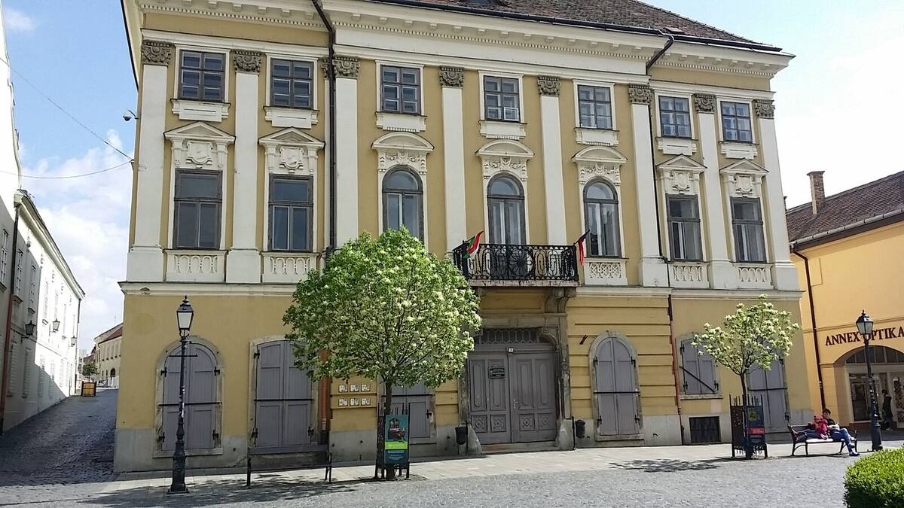
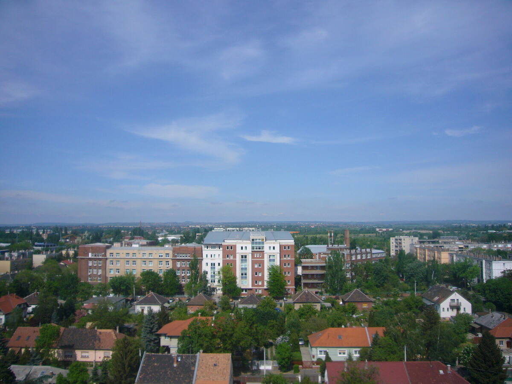
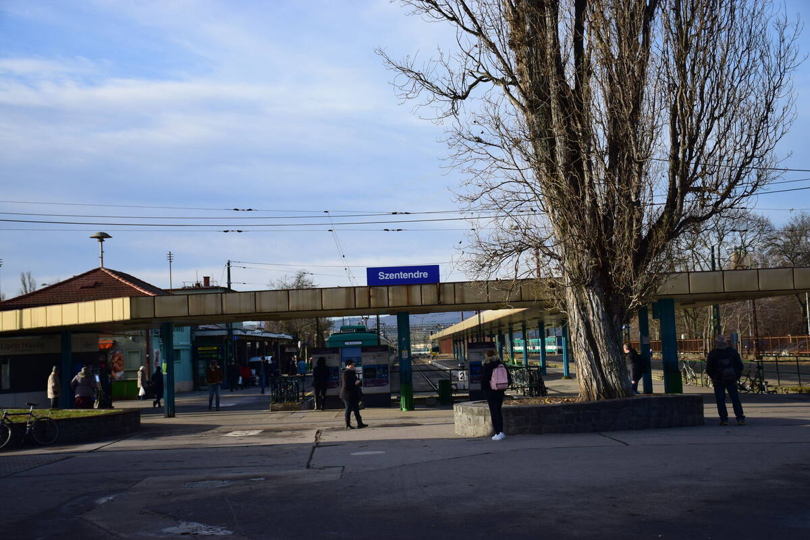
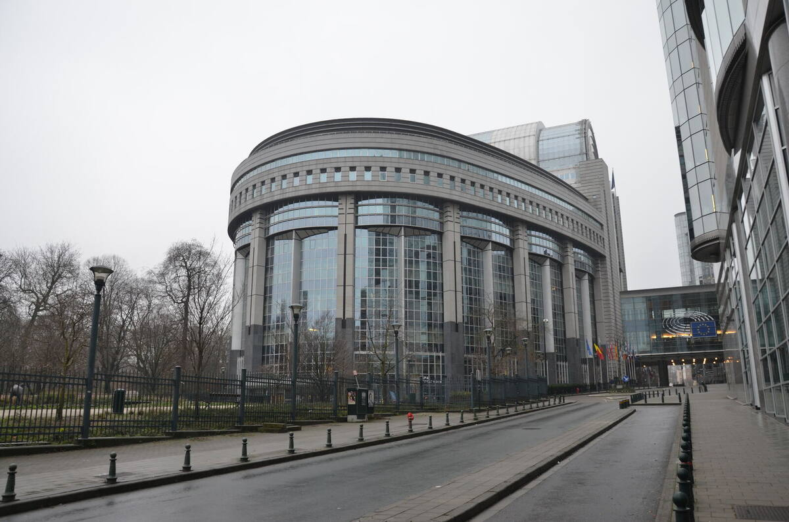

Önkormányzatok, közigazgatás, egészségügy és oktatás — ami a településeken valóban eldől. Napi tudósítás és heti terepmunka.

Hat megye, huszonnégy polgármester, egyetlen közös mondat: a pénz megvolt, az idő nem.

A praxisközösségek harmadik éve működnek, a lefedettség viszont nem javult ott, ahol a legnagyobb a hiány.


November 15-ig ingyenes regisztrációval minden cikk teljes egészében olvasható.
Regisztrálok